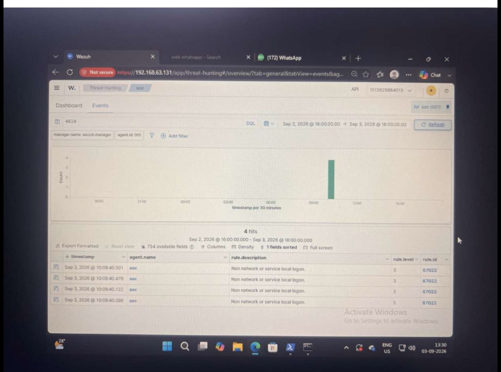
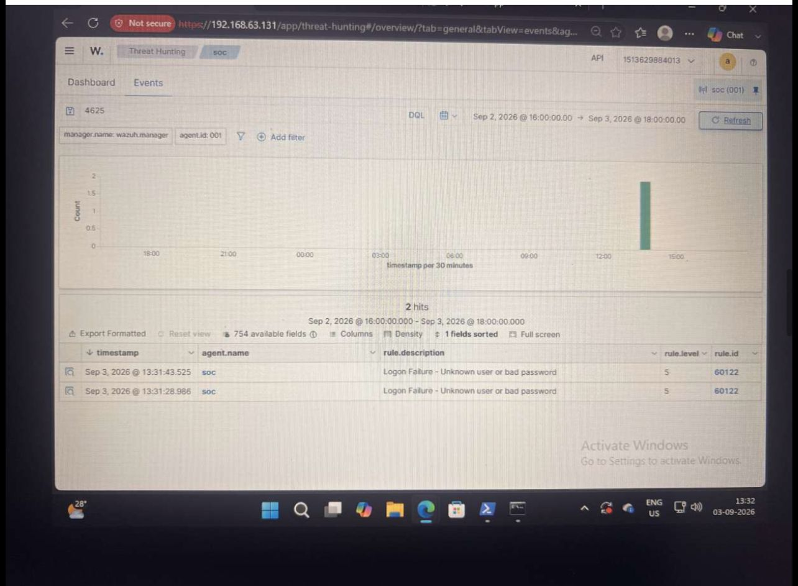
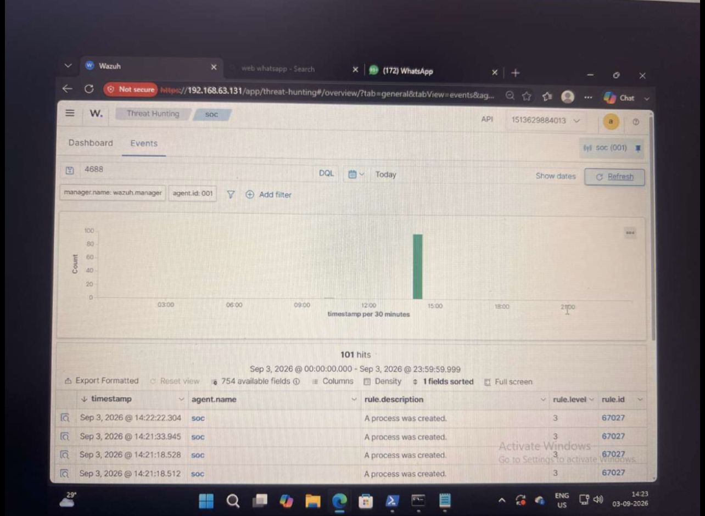
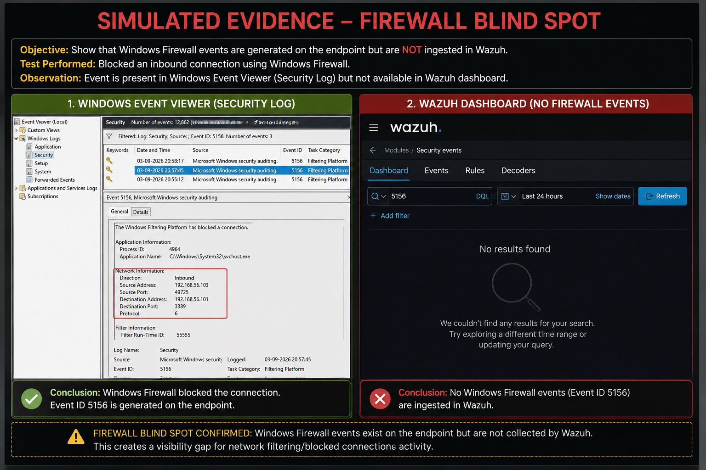

01 — Wazuh Dashboard
Central monitoring interface used to review endpoint security activity.
A hands-on Windows security monitoring project using Wazuh to collect endpoint telemetry, detect security events, investigate activity and document evidence from a SOC analyst perspective.
This project demonstrates practical cybersecurity monitoring through endpoint telemetry, SIEM analysis and SOC investigation.
The objective is to build and document a Windows endpoint monitoring workflow where security-relevant events can be collected, detected, reviewed and investigated through a centralized Wazuh environment.
The investigation follows a practical analyst workflow: identify the event, validate the evidence, understand the activity, assess potential impact, determine priority and identify monitoring gaps.
The project demonstrates centralized Windows endpoint monitoring through Wazuh and an evidence-driven SOC investigation methodology.
Collect relevant Windows security and system telemetry from the monitored endpoint.
Use Wazuh rules and event analysis to identify security-relevant activity.
Review event IDs, timestamps, accounts, processes and surrounding context.
Differentiate expected administrative activity from potentially suspicious behavior.
Preserve screenshots, observations, severity reasoning and monitoring limitations.
Identify telemetry gaps and opportunities for stronger security monitoring.
Establish centralized visibility into important Windows security and system events.
Validate that authentication, process and endpoint security events can be observed.
Practice reviewing event evidence from the perspective of a SOC analyst.
Identify areas where additional telemetry or configuration would improve detection capability.
Technologies and security concepts used throughout the project.
A simplified representation of the monitoring and investigation flow.
The lab was approached as a controlled monitoring exercise to validate visibility across several Windows event categories.
Confirm that the Windows endpoint and Wazuh monitoring pipeline are operational.
Review authentication, PowerShell, process, Defender, application and firewall-related activity.
Check whether expected activity is visible in Wazuh and review the associated event details.
Correlate timestamps, event types, accounts, processes and surrounding context.
Determine priority using observed evidence, context and potential security impact.
Document visibility limitations and distinguish simulated evidence from confirmed incidents.
Evidence captured from the Windows security monitoring workflow.
Central monitoring interface used to review endpoint security activity.

Authentication telemetry showing a successful Windows logon event.

Authentication telemetry representing a failed Windows logon attempt.

Evidence associated with PowerShell activity observed by the monitoring pipeline.

Application-level telemetry captured as part of endpoint monitoring.

Windows Defender-related telemetry available for analyst review.

Process creation telemetry useful for execution and endpoint investigation.

Controlled simulation demonstrating the importance of validating network telemetry coverage.
Evidence is separated from assumptions so that findings can be interpreted accurately.
Successful and failed Windows logon activity provides useful context for authentication investigations.
PowerShell telemetry can identify command-line activity requiring additional analyst context.
Process creation events can support investigation of execution activity and process relationships.
The simulated blind spot demonstrates that detection quality depends on adequate telemetry coverage.
Severity should be based on evidence, context and potential impact rather than an event ID alone.
| Activity | Evidence | Assessment | Suggested Priority |
|---|---|---|---|
| Successful Logon | 4624 | Normally informational unless account, source or timing is suspicious. | Low / Contextual |
| Failed Logon | 4625 | Requires correlation when repeated or anomalous. | Low–Medium |
| PowerShell | PowerShell telemetry | Legitimate administration is possible; suspicious commands require deeper review. | Medium / Contextual |
| Process Creation | 4688 | Useful for execution analysis and process investigation. | Medium / Contextual |
| Firewall Blind Spot | Simulation | Represents a monitoring gap rather than proof of compromise. | Monitoring Gap |
Relevant ATT&CK concepts for analyst investigation. A mapping does not by itself prove malicious activity.
PowerShell
Relevant when PowerShell activity is detected
and requires investigation.
Valid Accounts
Relevant when authentication activity suggests
possible misuse of legitimate credentials.
Command and Scripting Interpreter
Useful context for command-line execution
investigations.
A practical workflow for moving from an event to an informed security decision.
Determine what triggered the alert and which endpoint, account or process is involved.
Confirm the event in the underlying telemetry and review its timestamp and details.
Look for related authentication, process, PowerShell, Defender and network evidence.
Determine whether the behavior is expected, suspicious or potentially malicious.
Consider privilege, execution context, indicators and potential impact.
Escalate, contain or document the case according to the applicable incident-response process.
This project demonstrates a practical Windows security monitoring workflow using Wazuh: collecting endpoint telemetry, reviewing security events, validating evidence, assessing severity and recognizing monitoring gaps. The objective is not simply to generate alerts, but to turn raw telemetry into useful information for security investigation.
Interested in cybersecurity, SOC operations, SIEM technologies, threat detection and security monitoring.